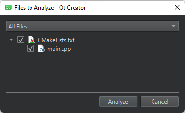
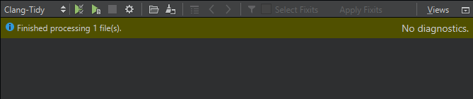

Analyze code with Clang-Tidy and Clazy
Qt Creator comes with the following Clang tools for finding problems in C, C++, and Objective-C source code by using static analysis:
- Clang-Tidy, which has diagnostics and fixes for typical programming errors, such as style violations or interface misuse.
- Clazy, which helps Clang understand Qt semantics. It displays Qt related compiler warnings, ranging from unnecessary memory allocation to misuse of API and has refactoring actions for fixing some of the issues.
Note: The Clang static analyzer checks are a part of Clang-Tidy. To use the checks, you must create a custom configuration for the Clang tools and enable them for Clang-Tidy.
Analyze the current file
To run Clang-Tidy or Clazy to analyze the currently open file:
- Select the (Analyze File) button on the editor toolbar, and then select the tool: Clang-Tidy or Clazy.
- Select Tools > C++ > Analyze Current File with Clang-Tidy or Analyze Current File with Clazy.
Analyze an open project
To run Clang-Tidy or Clazy to analyze an open project:
- Select Analyze > Clang-Tidy or Clazy.
- Select the files to apply the checks to.

- Select Analyze to start the checks.
View diagnostics
The Clang-Tidy or Clazy view shows the issues:

Diagnostics in the Clang-Tidy view.
Note: If you select Debug in the mode selector to open the Debug mode and then select Clang-Tidy or Clazy, you must select the  (Start) button to open the Files to Analyze dialog.
(Start) button to open the Files to Analyze dialog.
Double-click an issue to move to the location where the issue appears in the code editor.
If a fixit exists for an issue, you can select the check box next to the issue to schedule it for fixing. Select the Select Fixits check box to select all fixits. To see the status of an issue, hover the mouse pointer over the icon next to the check box.
To see more information about an issue that is marked with the  icon, hover the mouse pointer over the line.
icon, hover the mouse pointer over the line.
Select the  button to customize diagnostics for the current project.
button to customize diagnostics for the current project.
Disable checks
To disable checks of a particular type either globally or for a particular project, select Disable This Check or Disable These Checks in the context menu.
Load diagnostics from YAML files
In addition to running the tools to collect diagnostics, you can select to load diagnostics from YAML files that you exported using the -export fixes option.
See also Check code syntax, Configure Clang Diagnostics, Specify Clang tools settings, and Clang Tools.